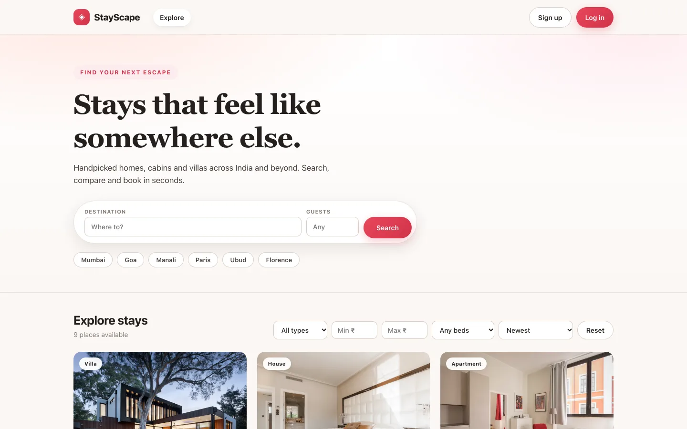
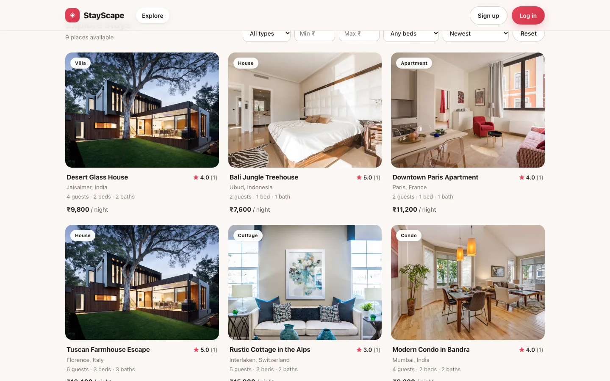
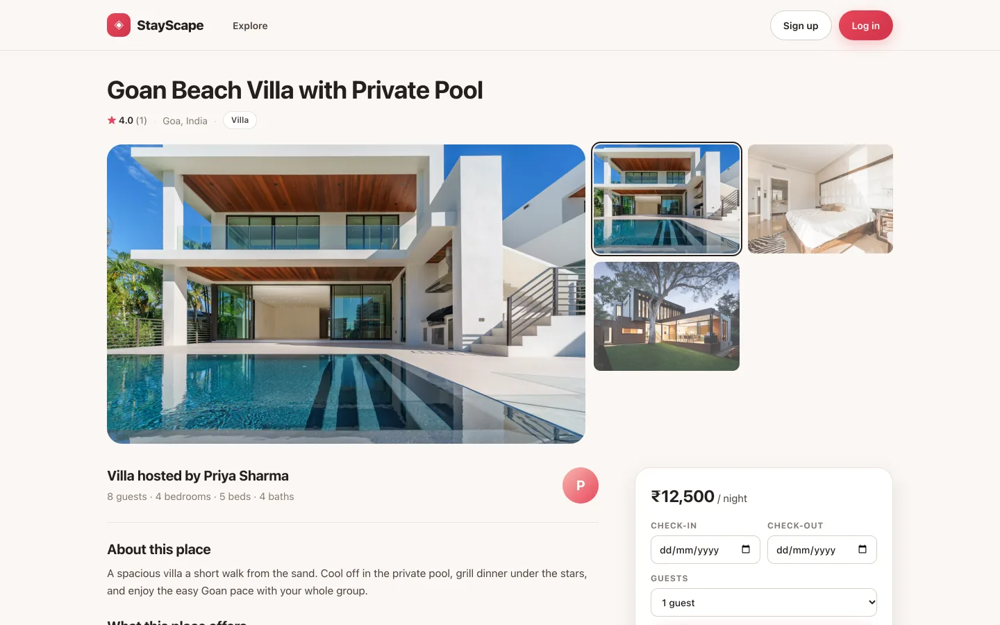

Find and book fast
Search by destination, filter by type, price and capacity, compare ratings, then reserve available dates without the UI lying about what is free.
Case study — 04
StayScape is a full-stack Airbnb-style platform built as the Sapphire IQ capstone. It covers the whole arc of a listings-and-booking product: a modelled backend, live search and filters, an overlap-safe booking flow, interactive maps, reviews and a role-based host dashboard — wired together with JWT auth.



Search & discovery · filtered listing grid · listing detail with booking
01 — The brief
An Airbnb clone is not one screen — it is auth, a data model, search, and a booking engine that must never double-book. The capstone framed it as five modules; the real work was making them behave as one system.
Search by destination, filter by type, price and capacity, compare ratings, then reserve available dates without the UI lying about what is free.
Hosts need their own surface: publish and edit listings, see incoming bookings and guest details, and track revenue and ratings at a glance.
A single developer had to deliver the backend, the connected frontend, the booking logic, maps, reviews and deployment — with no room for unverified claims.
02 — The modules
Each capstone module is implemented and verified. The table maps the brief to what actually shipped in the build.
| Module | What it does | Status |
|---|---|---|
| Backend foundation | Data model for users, listings, bookings and reviews; CRUD APIs; JWT auth and role middleware. | Built |
| Listings & search | Live listing grid with destination search, type/price/capacity filters, sorting, pagination and loading/empty states. | Built |
| Booking flow | Date selection, availability checks and server-side overlap validation that prevents double-bookings. | Built |
| Maps, reviews & dashboard | Leaflet maps, a review system with average-rating aggregation, and a host dashboard for listings, bookings and stats. | Built |
| Deployment & polish | Production build served by the API as a single service, environment-based config, responsive layout and image fallbacks. | Built |
03 — Key decisions
The interesting parts of a booking platform are the rules behind the screens. These are the choices that mattered most.
Overlaps are rejected with a half-open interval rule — existing.in < new.out && existing.out > new.in — excluding cancelled stays. The UI checks too, but the database is the source of truth.
Users, listings, bookings and reviews were designed first, with keys and constraints. Every screen is a read or write against that model, so the frontend never had to invent structure.
JWT tokens carry the user’s role. Guests can book and review; only hosts can publish listings, and only the owner can edit or delist their own. Authorisation lives in middleware, not just buttons.
The brief allowed MongoDB or PostgreSQL. I used Node’s built-in SQLite so the project runs with no database server, while keeping the schema clean enough to port to Mongoose or Sequelize.
04 — What I built
I built the Express API and its data model, then the React frontend that consumes it — auth, search, booking, maps, reviews and the host dashboard — and verified the flows in a real browser.
05 — Status
This is an engineering capstone, not a launched marketplace. Here is exactly what exists and what would come next.
06 — Lessons
Client-side checks make the UI feel considerate, but only the server can guarantee correctness. Moving overlap validation into the API made the whole booking flow trustworthy.
Guests and hosts see different surfaces, but they share one identity system. Deciding where authorisation lives early kept the routes, UI and data consistent.
SQLite removed operational friction, but the schema and query layer are isolated so the database can be swapped without rewriting the product.
A page can render and still be broken. Walking the real journeys — login, book, review, publish — is what turned a set of features into a working platform.
The full build runs locally — I can walk through the API, the data model and the booking logic.